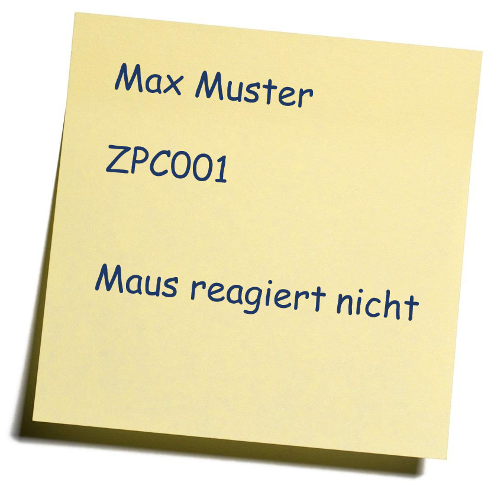

Notizen machen
Konkrete Beispiele meiner Notizen
- Im Büro mache ich oft Notizen auf Post-It's. Beispiel: Wenn mich jemand auf der Support-Hotline anruft: 
- Abläufe und Dokumentationen halte ich im OneNote fest.
Tipps für gute Notizen
- Ausgelagertes Gedächtnis
- Auseinandersetzung mit dem Gehöhrten
- Mit eigenen Worten formulieren
- Handgeschriebene Notizen besser als auf dem Laptop
- visualisieren (mit Farbe arbeiten)
- lesbar schreiben
- Datum & Uhrzeit aufschreiben
Methoden
Reflexion meiner Notizen
Ich könnte meine Notizen zukünftig besser strukturieren und z.B. mit Farben arbeiten. Ich finde auch die 3-Spalten-Technik gut um übersichtliche Notizen zu machen.
Bei der Arbeit an der Support-Hotline könnte ich meine Post-it-Zettel mit Datum und Uhrzeit ergänzen. Bei Notizen zu einem bestimmten Thema ist ein Mindmap hilfreich.
Informationen strukturieren
Arten um Informationen zu strukturieren
| Methode | Beschreibung |
|---|---|
| Auf Papier notieren |
|
| Mindmap |
|
| Diagramm |
|
| Tabelle |
|
| Zeitreihe |
|
| Passende Apps wie OneNote |
|
Ich bevorzuge OneNote, da diese App viele nützliche Funktionalitäten beinhaltet. Ich kann Informationen sammeln, Bilder, Tabellen und Diagramme einfügen und so weiter. Alles wird automatisch in der Cloud gespeichert und man kann von überall darauf zugreifen.
Quellen: https://denkwerkzeuge.wordpress.com
Test Hilfsmittel: Evernote
Bei Evernote können Notizen leicht erfasst und ähnlich wie bei OneNote mit verschiedenen Notizbüchern strukturiert werden. Es gibt eine Handyversion von dieser App, mit der man auch von unterwegs auf seine Notizen zugreifen kann. Bei einem neuen Eintrag kann man zwischen Notiz und Aufgabe auswählen. Bei der Erstellung einer Aufgabe in der Gratis-Version sind die Features stark eingegrenzt: “Fälligkeitstermin zuweisen”, “Erinnerung einrichten”, “Markieren” und “Zuweisen” werden nur mit der “Personal”-Version (CHF 5.- pro Monat) freigeschaltet.